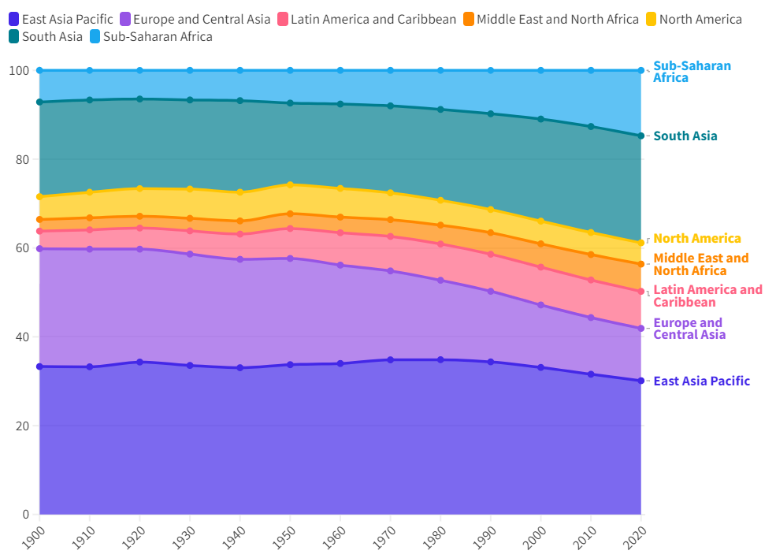
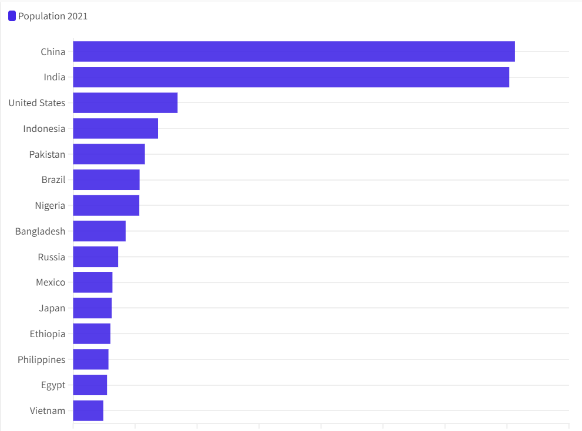
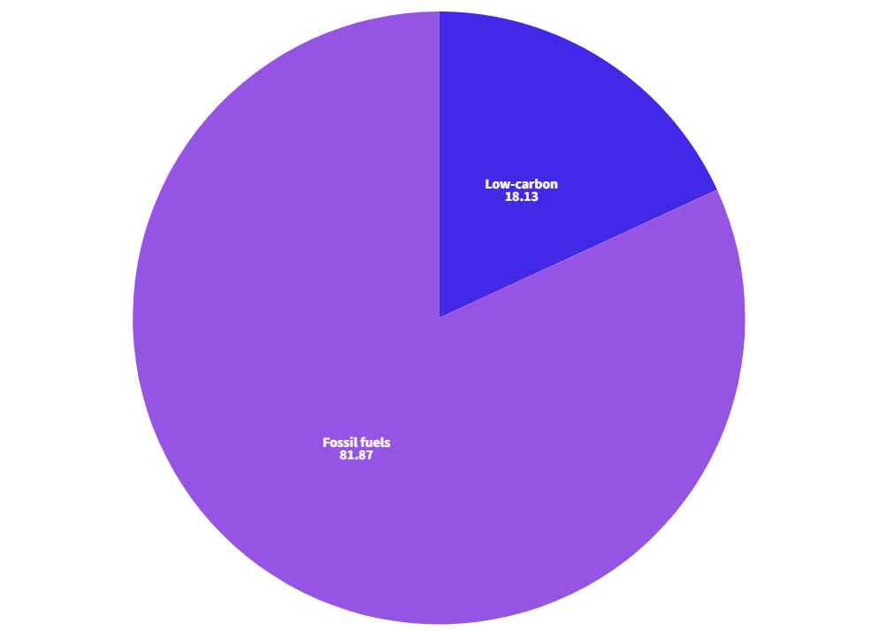

A visual representation using lines to connect data points, illustrating trends or patterns over time or a continuous interval.

Area chart
Similar to a line chart but with filled areas below the lines, emphasizing the magnitude of values and commonly used for illustrating cumulative trends.

Bar chart
Displays data using rectangular bars of varying lengths to compare and represent the values of different categories.

Pie chart
A circular graphic divided into slices, each representing a proportionate part of the whole and used to show the distribution of categorical data.